Snapshot 2026-11-02 · Agent brief · Manifest · Current-view contact sheet
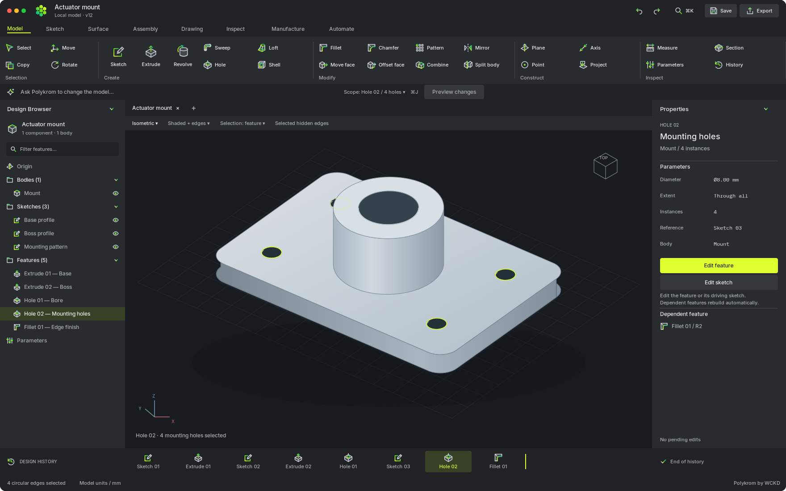
01 / Polykrom · Parametric modelling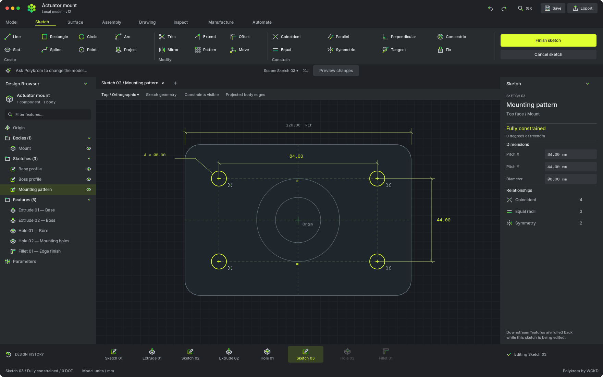
02 / Polykrom · Fully constrained mounting sketch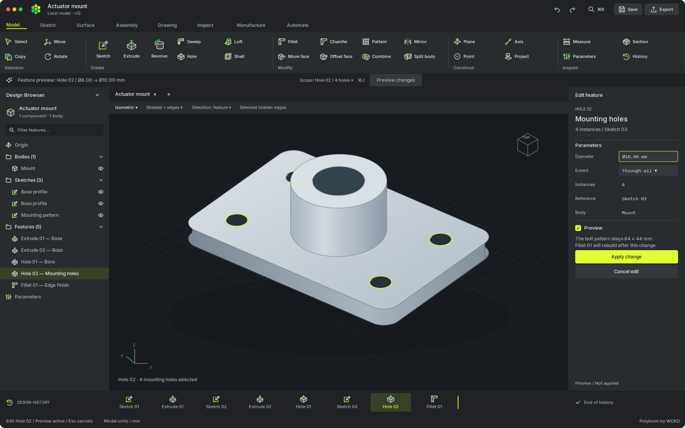
03 / Polykrom · Edit mounting-hole feature04 / Polykrom · Native AI model review05 / Polykrom · Model updated / Undo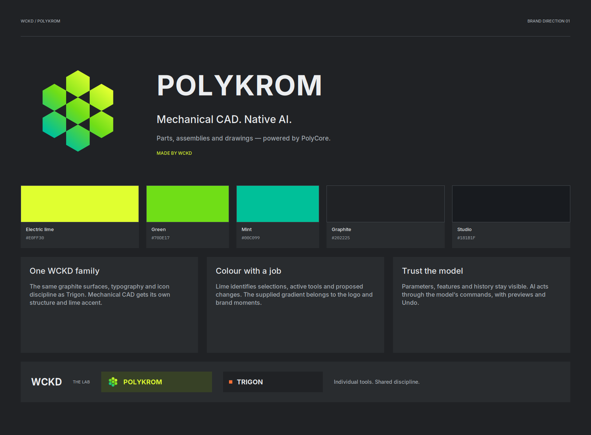
Polykrom / Brand direction 01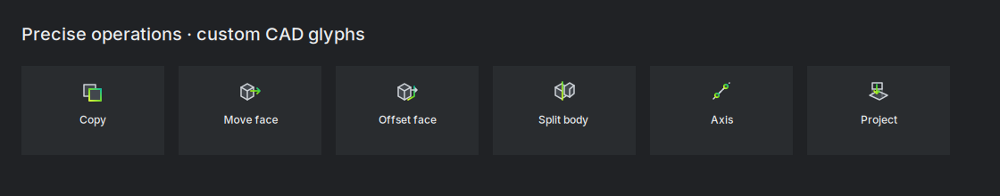
CAD icons / Additional operations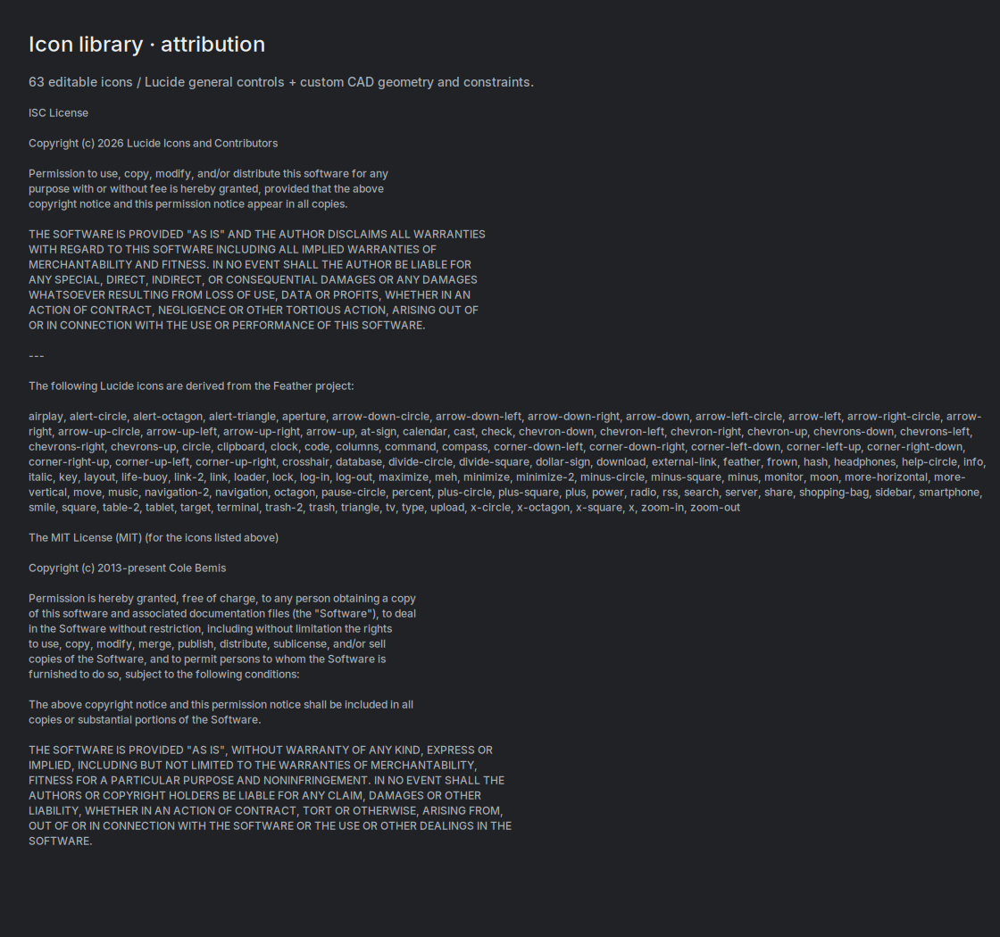
Icon attribution / Lucide & Feather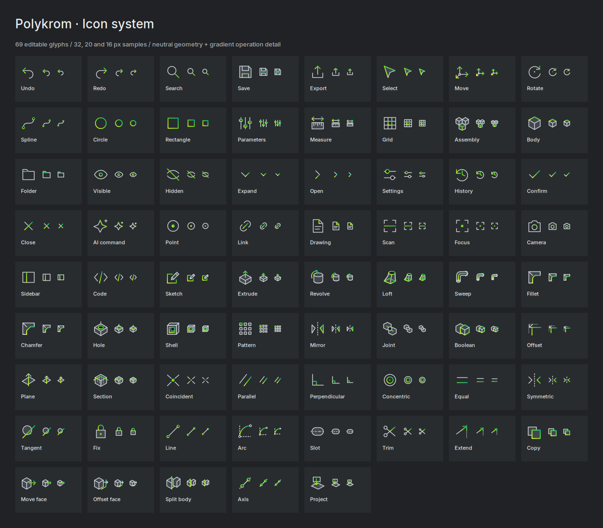
Polykrom / Complete icon review · 69 glyphs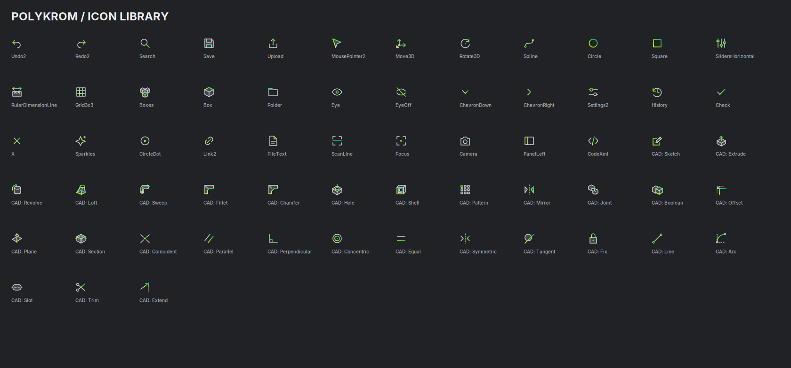
Polykrom / Icon library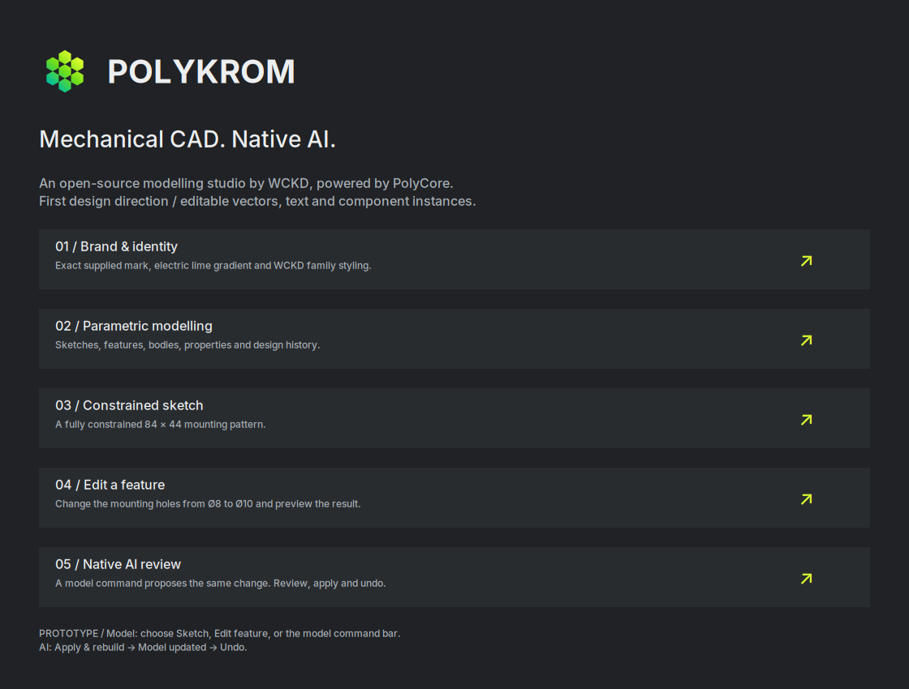
Polykrom / Start here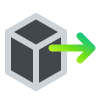
Polykrom / Icon / Move facePolykrom / Icon / OffsetPolykrom / Icon / Offset facePolykrom / Icon / OpenPolykrom / Icon / ParallelPolykrom / Icon / Parameters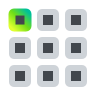
Polykrom / Icon / PatternPolykrom / Icon / PerpendicularPolykrom / Icon / PlanePolykrom / Icon / PointPolykrom / Icon / ProjectPolykrom / Icon / RectanglePolykrom / Icon / RedoPolykrom / Icon / RevolvePolykrom / Icon / RotatePolykrom / Icon / SavePolykrom / Icon / ScanPolykrom / Icon / SearchPolykrom / Icon / SectionPolykrom / Icon / SelectPolykrom / Icon / SettingsPolykrom / Icon / ShellPolykrom / Icon / SidebarPolykrom / Icon / SketchPolykrom / Icon / SlotPolykrom / Icon / SplinePolykrom / Icon / Split bodyPolykrom / Icon / SweepPolykrom / Icon / SymmetricPolykrom / Icon / TangentPolykrom / Icon / TrimPolykrom / Icon / UndoPolykrom / Icon / Visible